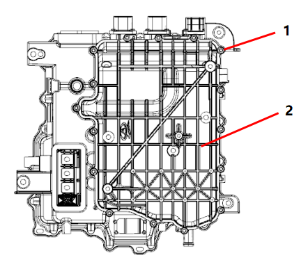
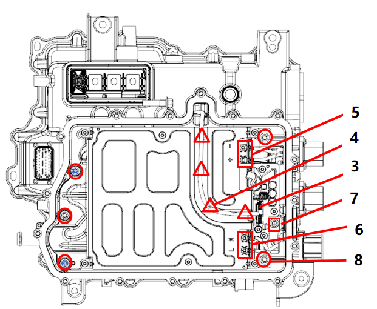
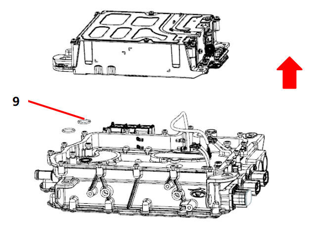

| № | Операционные процессы | Требования к сборке | Инструмент / Вспомогательные материалы | Меры предосторожности |
| 1 | Снятие системы пополнения Питание |
A: Обратиться к разделу "Замена и ремонт контроллера электродвигателя в сборе", выполнить Снятие контроллера электродвигателя в сборе. B: Перед заменой системы пополнения Питание необходимо продуть начисто охлаждающую воду в водяных каналах контроллера. C: Положить контроллер электродвигателя в сборе горизонтально на разборочный стол, убедившись, что разборочный стол чистый; использовать Динамометрический ключ и торцевую головку для Снятие в общей сложности 16 болтов по периметру нижней крышки контроллера (Рисунок 1), очистить цветовые метки, положить их в контейнер, затем снять нижнюю крышку.  D: Использовать нож или ножницы, чтобы срезать 4 кабельные стяжки в местах, показанных на Рисунке 4, нажать на защелку и снять низковольтный разъем (Рисунок 3); использовать Динамометрический ключ и торцевую головку для Снятие 4 болтов крепления жгута проводов в двух местах, показанных на Рисунке 5 и Рисунке 6.  E: Использовать Динамометрический ключ и торцевую головку для Снятие 1 болта соединения разъема DCDC в месте, показанном на Рисунке 7. Затем выполнить Снятие 5 болтов крепления системы пополнения Питание, показанных на Рисунке 8. F: Снять систему пополнения Питание движением вверх, затем снять 2 шт. уплотнительных колец водяного канала системы пополнения Питание (Рисунок 9) и утилизировать их  |
Динамометрический ключ, торцевая головка, ножницы |
1. В процессе Снятие избегать попадания посторонних предметов внутрь контроллера. 2. Перед заменой системы пополнения Питание необходимо продуть начисто охлаждающую воду в водяных каналах контроллера |
| 2 | Сборка системы пополнения Питание |
A: Перед сборкой установить новые уплотнительные кольца водяного канала в пазы, показанные на рисунке, затем поместить систему пополнения Питание в контроллер. B: Использовать Динамометрический ключ и торцевую головку для диагональной затяжки 5 болтов крепления системы пополнения Питание (Рисунок 1), момент затяжки 11 Nm ± 1 Nm. Затянуть болт соединения плюсового разъема Выход DCDC и системы пополнения Питание (положение на Рисунке 2), момент затяжки 6.5 Nm ± 0.5 Nm. C: Использовать Динамометрический ключ и торцевую головку для фиксации 2 болтов высоковольтного жгута проводов и 2 болтов жгута проводов разъема OBC, момент затяжки 1.7 Nm ± 0.1 Nm. При сборке обратить Внимание на рисунок ниже, различать положительный/отрицательный полюса и фазный/нулевой провода. D: Вставить разъем низковольтного жгута проводов системы пополнения Питание в положение, показанное на Рисунке 3, слегка потянуть за разъем, чтобы убедиться в надежности соединения. Затем закрепить жгут проводов с помощью 4 кабельных стяжек на корпусе системы пополнения Питание в положениях, показанных на Рисунке 4. E: Собрать нижнюю крышку контроллера электродвигателя в сборе, использовать Динамометрический ключ и торцевую головку для диагональной затяжки 16 болтов нижней крышки контроллера электродвигателя в сборе, момент затяжки 6.5 Nm ± 0.5 Nm. F: Обратиться к пункту 2 раздела "Замена и ремонт контроллера электродвигателя в сборе", выполнить сборку контроллера электродвигателя в сборе. G: После завершения сборки выполнить проверку герметичности водяных каналов и проверку герметичности полости, затем собрать вентиляционный клапан. |
Динамометрический ключ, торцевая головка, клеевой пистолет |
1. При сборке избегать попадания посторонних предметов внутрь контроллера; 2. Внимание: при сборке соблюдать моменты затяжки каждого болта, выполнять в соответствии с Требования; 3. При сборке необходимо затягивать болты по диагонали. |
| 3 | Подтвердить | Очистить и проверить внешний вид системы электропривода в сборе | / |